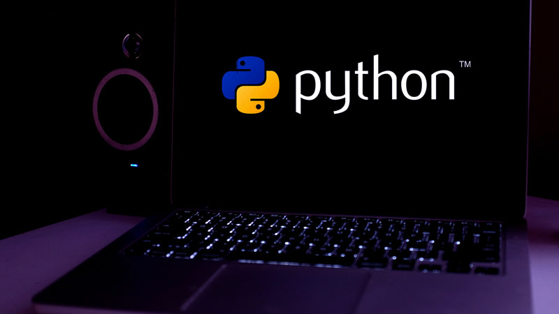

lenguajes de programación más usados actualmente
Los lenguajes de programación son los que hacen posible que todos los servicios, sitios y entornos digitales que hoy utilizamos, sencillamente puedan funcionar. Por eso existe una gran variedad en cuanto a opciones y elegir en cuáles invertir nuestro tiempo puede no ser tan fácil.
Hoy, en la era de los datos, dominar diferentes lenguajes de programación es un aspecto básico en el desarrollo de soluciones de software, sistemas y tecnologías de la información. Además, es simplemente elemental en cuanto a competitividad.
Pero si te interesa estudiar programación o formarte profesionalmente en tecnologías de la información, también es importante utilizar tu tiempo de forma óptima, para lo cual seguro te va a interesar elegir aprender aquellos lenguajes de programación que te abran más puertas en el mercado.
JavaScript
JavaScript, que se utiliza en desarrollo web, desarrollo de videojuegos, aplicaciones móviles y construcción de servidores web, sigue siendo entonces el lenguaje de programación más utilizado en la actualidad, en todo el mundo

Y esto se debe a dos buenas razones: lo utilizan la gran mayoría de los navegadores web y es considerado como uno de los lenguajes de programación más fáciles de aprender. Prácticamente no requiere de conocimientos previos en codificación, y una vez que se empieza a aprender, es posible practicar y divertirse con él de inmediato.
HtML
SHTML es la sigla del inglés HyperText Markup Language (lenguaje de marcado de hipertexto) y refiere al lenguaje de marcado para la elaboración de páginas web.

Es otro de los lenguajes más accesibles en el mundo de la programación, lo cual, tal como en el caso de JavaScript, en buena medida también explica su popularidad. Se utiliza en documentos y en el mantenimiento de sitios web. En esencia, es un lenguaje de marcado que permite dar formato a la apariencia de la información en un sitio web.
Python
Python es otro lenguaje de programación para propósitos generales, el cual permite a los desarrolladores utilizar varios estilos de programación diferentes al crear programas. Se emplea para el desarrollo de Back end, ciencia de datos y desarrollo de aplicaciones.

Sus capacidades interactivas permiten a los programadores probar el código sobre la marcha, reduciendo así la cantidad de tiempo dedicado a crear y probar largas secciones de código. Además, muchas son las herramientas y las plataformas digitales exitosas y altamente populares que se han desarrollado con Python, desde YouTube y Spotify a Netflix, Instagram o Google.
SQL
SQL, sigla del inglés Structured Query Language (lenguaje de consulta estructurada), es un lenguaje que permite a los programadores consultar y manipular bases de datos.
Como lenguaje específico de dominio, está diseñado principalmente para administrar datos dentro de un sistema de administración de bases de datos relacionales (RDBMS). Puede ubicar y recuperar datos de una base de datos, además de actualizar, agregar o eliminar registros.